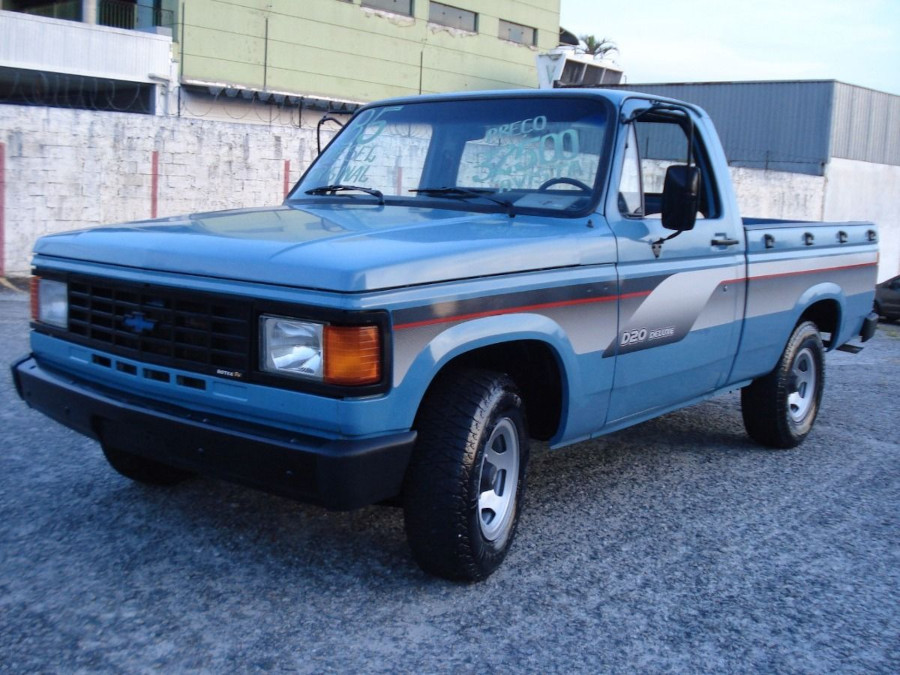

D20 - A história da lenda
D20 - 1985
A Série 20 surgiu em 1985, com um novo design que também compartilhou com as novas C10 e A10 (Serie 10), o mercado de utilitários era acirradamente disputado entre a Ford e a Chevrolet, e a Série 10 já demonstrava sinais de cansaço perante sua concorrente, a série de utilitários "F" da Ford.
Na linha de 1985, foram lançadas as pickups e posteriormente, em 1989, os utilitários esportivos. O grande destaque da nova série era o moderno desenho, típico dos veículos da década de 80, com identidade visual bastante semelhante ao resto da linha Chevrolet da época, com linhas retas e cantos arredondados, faróis quadrangulares iguais aos do Opala, grade frontal moldada em plástico, assim como a ponteira dos para-choques dianteiros. As dimensões da carroceria aumentaram em 100 mm na altura e na largura, em relação a Série 10 antiga. Comprimento, entre-eixos e as bitolas dianteiras e traseiras foram mantidas, pois o chassi era o mesmo da versão anterior.